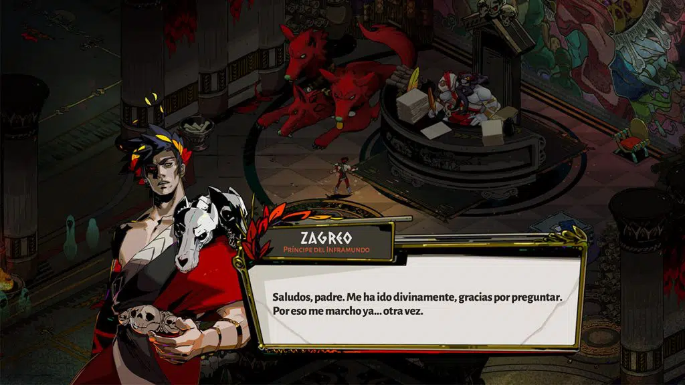

ANÁLISIS HADES
Hades me ha enamorado. Llevarse el galardón de mejor juego del año 2020 creo que se queda corto para esta obra maestra de Supergiant Games. A mis más de treinta años jugando ya es difícil volverme loco de pasión con un título y Hades lo ha conseguido. Un juego al que di una oportunidad por recomendación de un amigo y me arrepiento de no haberlo hecho antes. Su manido género, el de los roguelite, puede que no le haga destacar en un primer vistazo pero en el m omento en el que mueres por primera vez sabes que este juego es especial.
La idea de empezar desde cero cada vez que fallamos en un roguelite es algo que no me fascina pero en Hades quieres morir una y otra vez. Y esto es porque es la única forma de avanzar en una historia que cada vez nos atrapa más. La premisa es sencilla: somos Zagreo, hijo de Hades, que can sados de la tiranía de nuestro padre decidimos escapar del Inframundo. A este no le hará gracia e intentará impedírnoslo. Pero como Zagreo es muy majo, contará con la ayuda de los dioses del Olimpo para huir. No os vamos a contar más de la historia porque termina enganchando como la mejor de las series.
La forma de avanzar en un roguelite es morir constantemente y puede p arecer frustrante. Pero en Hades no es así. Cada vez que volvemos al pu nto de partida tenemos la sensación de haber avanzado un poco más en nues tras habilidades gracias a los objetos de mejora permanente. En cada tent ativa de escapar uno o varios dioses del Olimpo nos darán sus bendiciones , que solo estarán activas en ese intento, y con ellas seremos más fuertes para conseguir diferentes objetos. Estos podremos intercambiarlos por mejoras para Zagreo a través de varios personajes.
La dinámica es fácil, en una perspectiva isométrica vamos a avanzando por habitaciones en las que debemos derrotar a todos los enemigos, a veces ba jo condiciones especiales. Según avanzamos se vuelven más agresivos y res istentes por lo que elegir bien las habilidades aprendidas es fundamental . Por eso terminaremos teniendo a nuestros dioses favoritos pues sus bend iciones harán que tengamos una forma u otra de jugar. En ciertos puntos n os enfrentaremos a personajes mitológicos que hacen de jefes de nivel y n os pondrán las cosas difíciles si no hemos elegido bien. Además, sabes qu e si mueres toca empezar desde el principio. Una tensión añadida en los enfrentamientos.
